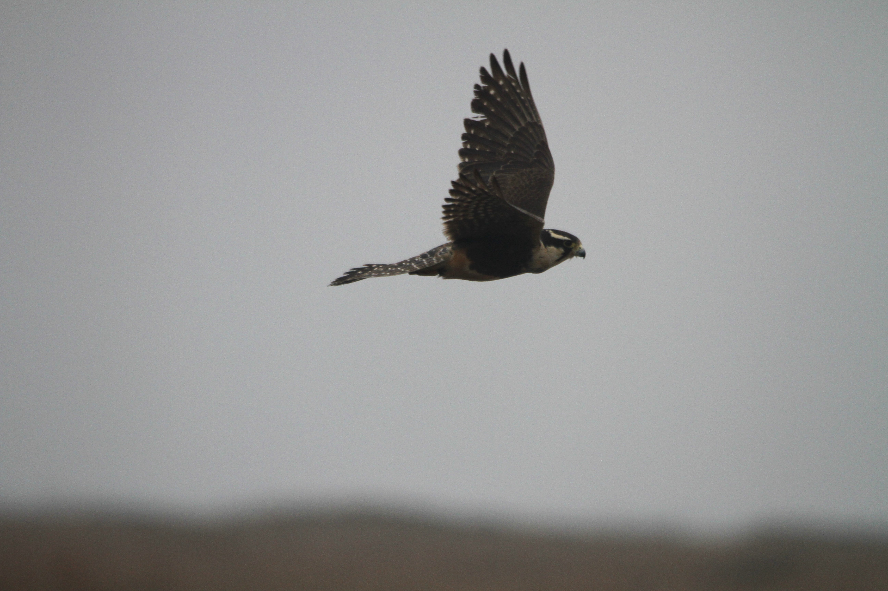
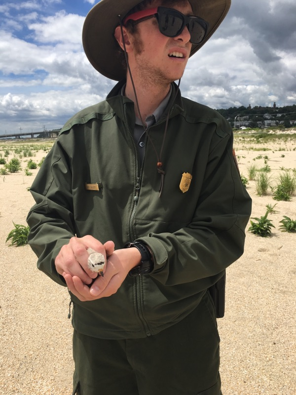
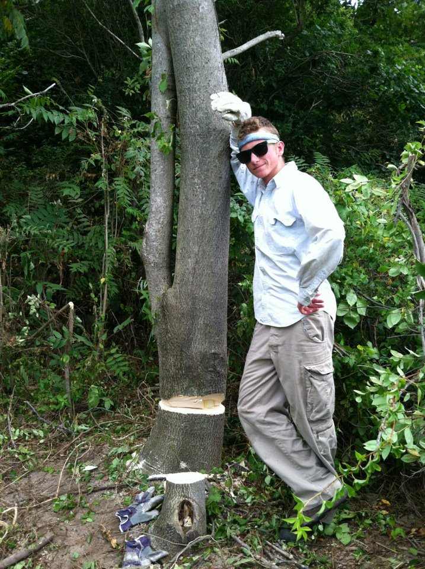

Nathaniel L. Selleck
Curriculum Vitae
Education
Master's of Science - Biology
Austin Peay State University
2020-2022 (in progress)
GPA: 3.75 of 4.00
Bachelor's of Science - Wildlife Conservation
Juniata College
2011-2015
GPA: 3.39 of 4.00
Work Experience
Biological Science Technician - Aquatic Invasive Species
National Park Service
Halls Crossing, UT
April 2019-June 2020
• Inspected watercraft leaving Lake Powell for the presence of Aquatic Invasive Species (AIS), such as quagga mussels, Eurasian milfoil, and New Zealand mud snails
• Informed the public of the importance of watercraft inspections, as well as the efforts of the National Park Service and the Utah Department of Natural resources to stop the spread of AIS
• Educated park visitors on the biology of quagga mussels, as well as their ecological impacts on Western waters
• Managed workload and schedule independently
Biological Science Technician
US Fish and Wildlife ServiceCorpus Christi, TX
August 2018-April 2019
• Planned and conducted point count surveys of migratory bird species on US Navy properties
• Identified common migratory birds of South Texas by both sight and sound
• Coordinated with civilian and military personnel to access survey points
• Managed workload with minimal supervision
• Worked independently in remote and sometimes hazardous field settings to conduct surveys
• Wrote quarterly reports summarizing data collected, as well as weather and site conditions
• Assisted in the trapping and banding of threatened and endangered avian species, including red knots and whooping cranes
Biological Science Technician
 National Park Service
National Park Service
Corpus Christi, TX
June 2017-August 2018
• Surveyed migratory waterfowl following mortality events
• Identified plant and animal species native to the Gulf Coast
• Assisted in prescribed burns and wildfire suppression activities
• Conducted point counts as part of grassland bird and colonial waterbird surveys
• Cooperated with other federal, state, and private organizations to carry out research and conservation projects
• Utilized ArcGIS to create maps for use in reports and to aid in management decisions
• Used park trucks and UTVs to conduct natural resource surveys in a backcountry setting
Biological Science Technician
National Park Service
Highlands, NJ
April 2016-September 2016, May 2015-September2015, May 2014-August2014
• Conducted population and nest surveys of endangered shorebird species.
• Banded osprey hatchlings for state population and migration studies.
• Utilized live traps to capture and relocate raccoons in historic structures
• Marked nesting sites using Trimble GPS units
• Maintained physical and digital records of endangered species data
• Collected shorebird survival data as part of a Virginia Tech research project
Shorebird Conservation Intern
Student Conservation Association
Highlands, NJ
June 2013-August 2013
• Conducted population and nest surveys of endangered shorebird species.
• Constructed exclosures to protect nest sites of endangered shorebirds.
• Banded osprey hatchlings for state population and migration studies.
• Collected, identified, and catalogued plant specimen for park herbarium.
• Marked shorebird nests and nesting areas using Trimble GPS unit for annual nest mapping.
• Captured and relocated nuisance animals using Tomahawk live traps.
Invasive Plant Intern

Student Conservation Association
Highlands, NJ
May 2012-August 2012
• Removed autumn olive and tree of heaven using bow saws and herbicide.
• Identified and marked exotic plant species for later removal.
• Constructed exclosures to protect eggs and hatchlings of endangered shorebird species.
• Banded osprey hatchlings for state population and migration studies.
• Marked endangered beach plants for state population studies using Trimble GPS unit.
• Measured total land area in the park cleared of invasive plants.